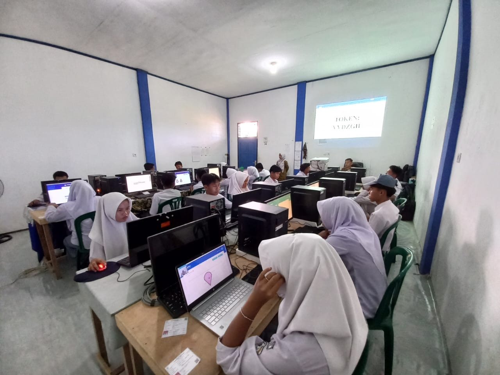
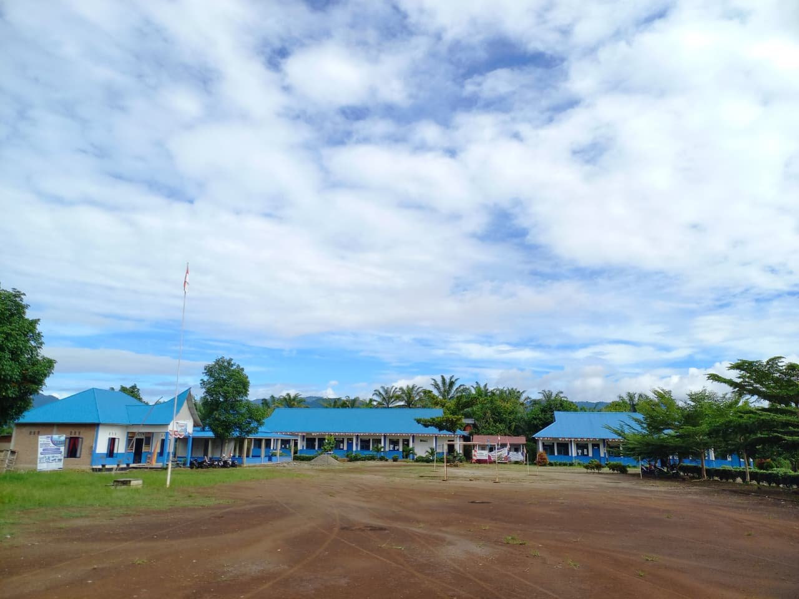
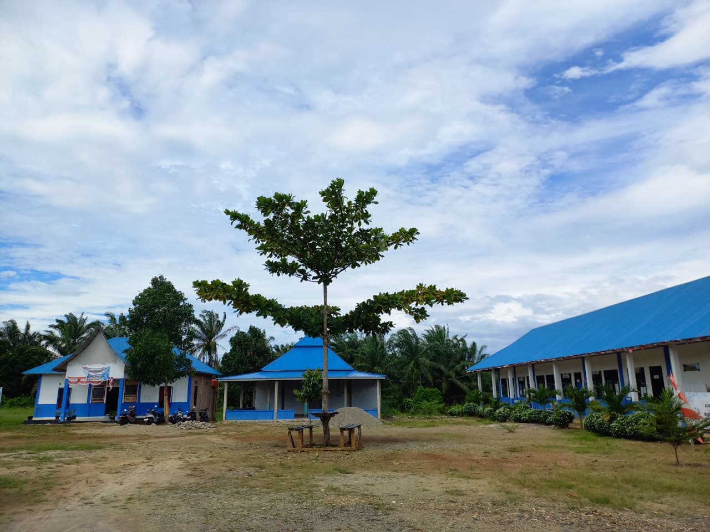
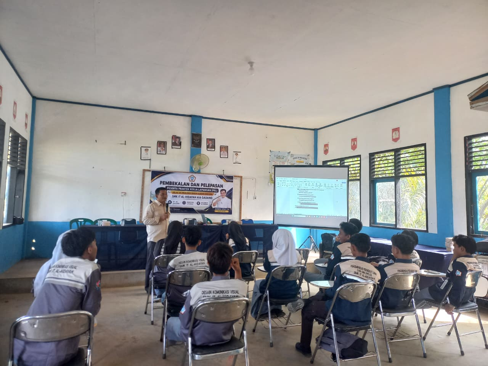

Fasilitas SMK IT Al Hidayah

Ruang Laboratorium
Ruang laboratorium modern yang dilengkapi dengan perangkat komputer, server lokal, router Cisco, dan jaringan untuk mendukung simulasi jaringan dan pemrograman.

Lapangan Serbaguna
Sarana olahraga outdoor terpadu yang dapat digunakan untuk kegiatan sepak bola, voli, dan bulu tangkis, sekaligus berfungsi sebagai area upacara resmi sekolah.

Musholla SMK IT Al Hidayah
Musholla yang nyaman dan tenang untuk kegiatan ibadah siswa dan guru.

Ruang Kelas
Ruang kelas modern yang dilengkapi dengan perangkat multimedia dan fasilitas belajar yang mendukung proses pembelajaran.